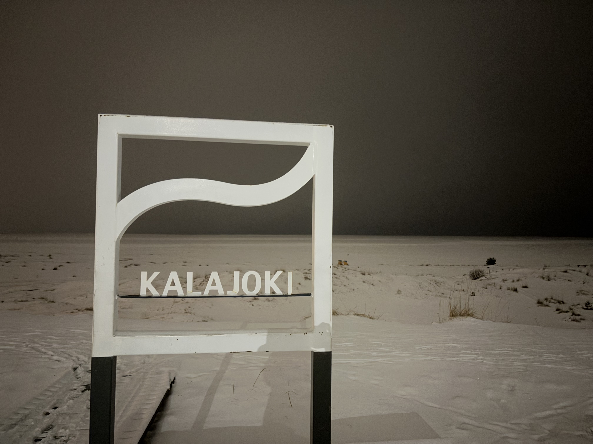
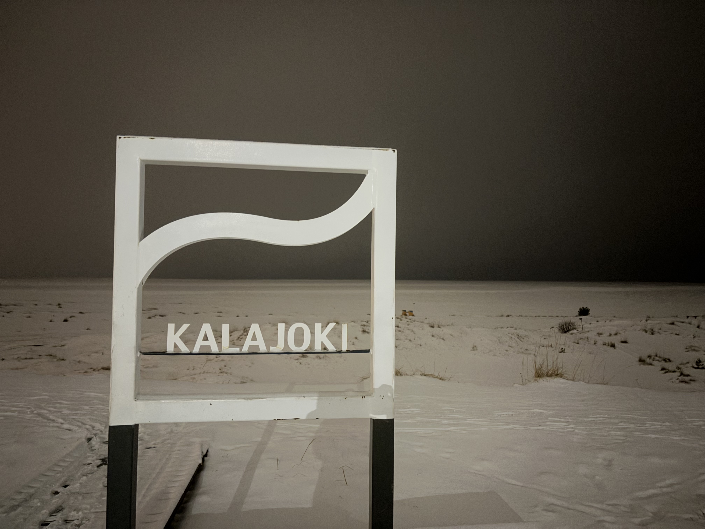

In 2024, the first exchange with the partner school from the city of Kalajoki in Finland will take place. This year, eleven Finnish students came to Germany, and the project is "Not Without My Phone", the project language is English. In January, the German student will visit Kalajoki. The student exchange will also be supported by Erasmus+.
About the school:
The school is quite small, with about 30 teachers and 250 students. A quarter of these students come from outside Kalajoki. The school is a "sock school", meaning the students do not wear shoes inside. Lessons are 1 hour and 30 minutes long, with a short break in between. Students can choose a specific track that includes more lessons in a particular subject. For example, students in the visual arts track have more art lessons. In this school, students have an "exam week" during which they focus solely on exams without any other lessons.
 
